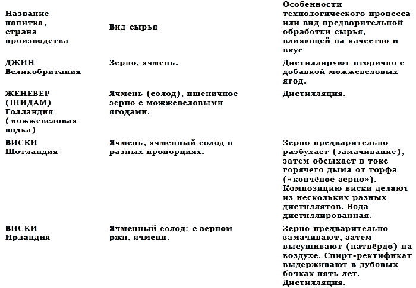
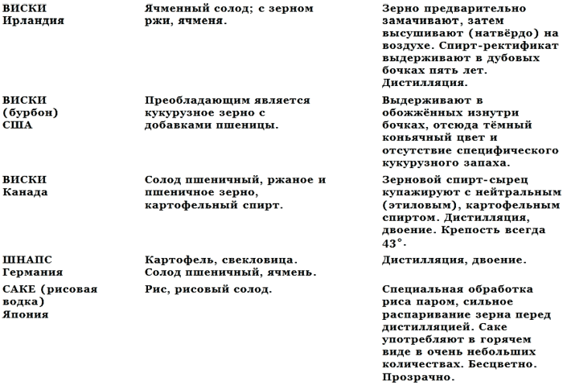
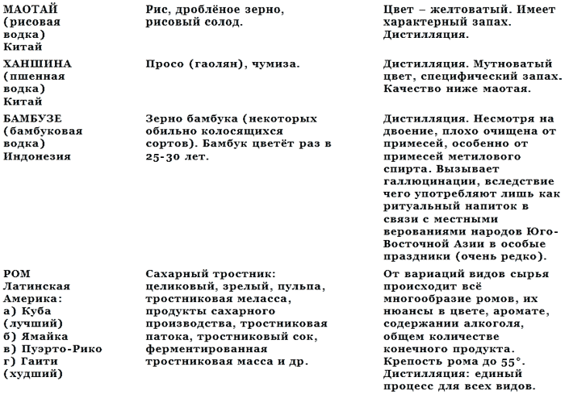
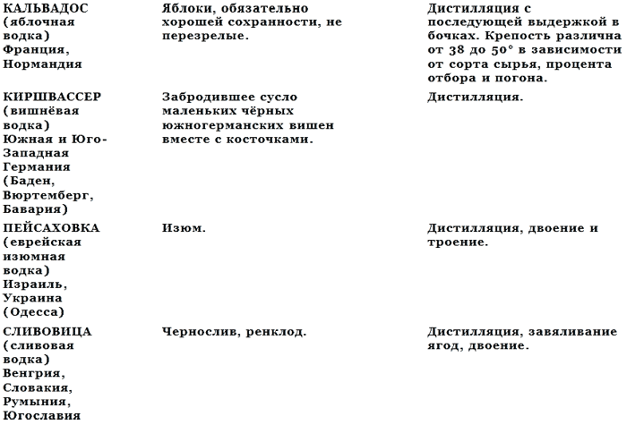
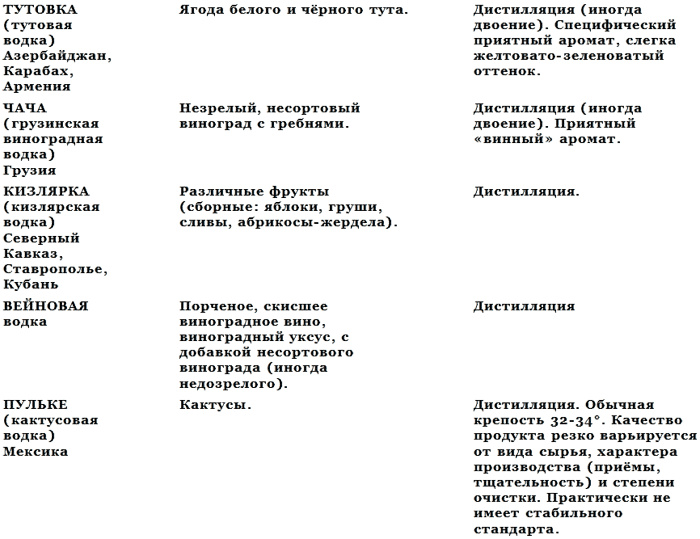
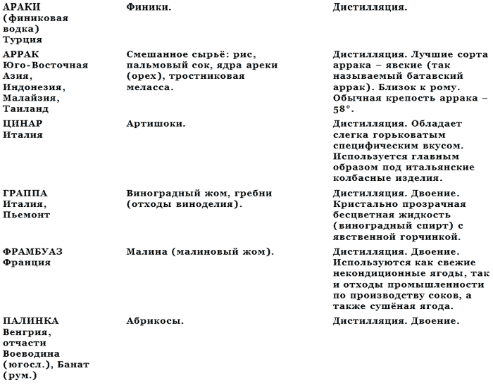
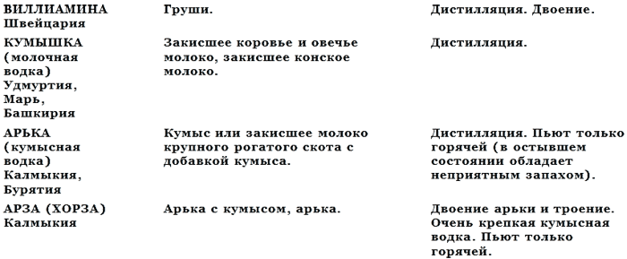
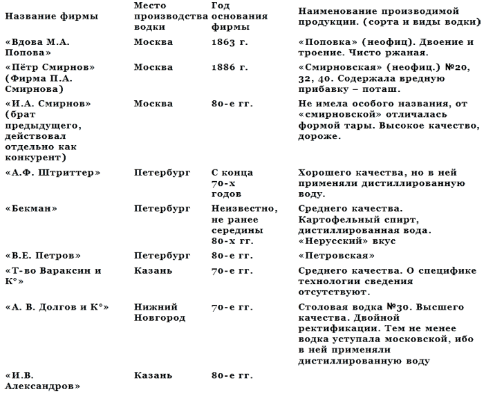
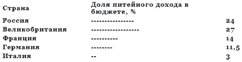

Что такое водка и ее история . Приложения .

Сравнительные сырьевые и технологические данные о крепких алкогольных напитках разных стран и национальных районов (для сопоставления с водкой)







Список частных русских фирм, производивших водку в дореволюционной России и возникших после отмены крепостного права в 1861 году

О воздействии алкоголя на человеческий организм
По поводу вредного воздействия алкоголя на здоровье и поведение человека (т.е. на способность человека контролировать себя, на его нервную систему и координацию движений) написано весьма много. Но эта литература в основном основана на эмоциях и оперирует аргументами морали или же приводит такие медицинские аргументы, которые не убеждают никого, ибо, во-первых, обычно используют примеры патологических случаев, наблюдаемых у хронических алкоголиков, и потому особо «страшные», но вовсе не свойственные массе «нормальных» потребителей алкоголя, а поэтому не подтверждаемые их личными ощущениями, наблюдениями и опытом; во-вторых, медицина, когда она фиксирует точный факт, а не даёт лишь рекомендации, имеет дело исключительно с патологоанатомическими данными, устанавливаемыми после смерти алкоголика, и, следовательно, может фиксировать вредное воздействие алкоголя, лишь когда абсолютно неясно, как сказались наряду с ним на здоровье все другие факторы, имевшие место в течение жизни данного индивидуума, — стресс, условия быта, наследственность, врожденные заболевания, другие перенесённые болезни.
По этой причине обычная медицинская пропаганда против пьянства не имеет никогда реального успеха, прежде всего среди самих медиков, в рядах которых достаточно пьяниц, ибо она не даёт никакой информации о том, как конкретно влияет та или иная доза алкоголя на здорового, нормального, обычного человека, не являющегося пьяницей, но иногда употребляющего алкоголь.
В 1903 году русский физиолог Н. Волович, стремясь прийти к объективному пониманию процессов, происходящих в здоровом, сильном, нормальном человеческом мужском организме при потреблении им алкоголя, отказавшись от обычного определения степени опьянения по внешнему виду человека (возбужден, навеселе, лезет целоваться, подвыпил, шатается, хватается за стенку, пьян в стельку, валяется под лавкой, столом, на тротуаре), нашёл действительно объективный показатель и произвёл уникальный опыт.
Н. Волович положил в основу измерения воздействия алкоголя на человека объективный фактор — число ударов пульса при потреблении разных доз алкоголя по сравнению с числом ударов пульса после выпивания человеком стакана воды. Пульс же измеряли в течение ровно суток после употребления алкоголя (в качестве которого взят спирт-ректификат 96°). При этом для чистоты опыта подопытные сутки голодали. При выпивании были зафиксированы следующие результаты: 20 г алкоголя (спирта) не давали практически никаких изменений, пульс увеличивался всего на 10-15 ударов в сутки или вовсе не изменялся у более здоровых людей. Зато уже употребление 30 г алкоголя вызывало увеличение на 430 ударов больше, чем обычно; 60 г алкоголя — на 1872 удара больше; 120 г алкоголя — на 12980 ударов больше; 180 г алкоголя — на 23904 удара больше, а при 240 г на следующий день уже на 25488 ударов больше, то есть сказывалось остаточное действие алкоголя, ибо он за сутки полностью так и не выводится из организма при приёме больших доз.
Отсюда следовал вывод: при потреблении 20 г алкоголя в организме человека не происходит никаких негативных изменений, а лишь идут стимулирующе-очистительные процессы. Следовательно, это количество в сутки нормально, оно даже профилактически порой необходимо (осенью, зимой, в сырую погоду и т. д.); в пересчете на водку с 40° содержанием спирта это означает 50 г; 30 г спирта или 75 г водки — это уже предел нормы. Всё, что свыше 60 г алкоголя (спирта) — то есть 150 г водки в сутки — уже вредно, а свыше 100 г спирта или 250 г водки — просто опасно, ибо это означает учащение на 10— 12 тыс. ударов пульса или сердцебиений больше, чем нормально, или на 8-10 сердцебиений в каждую минуту больше, чем можно и чем необходимо. Не всякий способен контролировать себя в такой ситуации. Имея эту информацию, пусть уж каждый рассчитывает свои силы и возможности, не питая никаких иллюзий.
В то же время даже 30 г водки, а не то что 50 г вполне достаточны как кулинарно-сопроводительный акцент к слишком жирной мясной или к солёно-пряной рыбной и овощной пище(см.).
Поскольку такую пищу потребляют не каждый день, а по крайней мере два-три раза в неделю, то 100-150 г водки в неделю, или 400-500 г в месяц, вполне соответствуют нормальной дозе, поэтому такое количество водки и должно стать отправной точкой для исчисления минимума государственного производства и как разумный минимум индивидуального потребления, к которому следует стремиться. Это означает, что страна, обладающая по крайней мере 200 млн. потенциальных потребителей водки, должна производить и реализовывать ежемесячно не менее 100 млн литров водки, чтобы покрыть нормальный и равномерно распределённый спрос, отнюдь не диктуемый целями опьянения. Но это минимум, который следует признавать, с которым следует считаться и который нельзя снижать, не рискуя вызвать взрыв спроса.
Советские водки
«Московская особая»
«Русская»
«Столичная»
«Пшеничная»
«Лимонная»
«Крепкая» 56°
«Горилка»
«Перцовка»
«Зубровка»
«Экстра»
«Посольская»
«Золотое кольцо»
«Кубанская»
«Сибирская» 45°[133]
«Юбилейная» 45°
«Старка»
«Петровская»
«Водка особая»
«Охотничья» 56°
В Прибалтике, кроме того, выпускают водки, использующие иную технологию и дистиллированную воду:
«Кристалл Дзидрайс» (Латвия, Рига)
«Виру Валге» (Эстония, Таллинн)
Из всех этих водок «Сибирская», «Юбилейная» и «Крепкая», обладающие крепостью свыше 40°, собственно,, к классической водке не относятся, ибо эталоном последней являются непременное сохранение 40°, рассчитанные по весу (а не по объёмам) ржаной солод и ржаное зерно (с добавками других злаковых в допустимых размерах), мягкая вода рек московского региона (2-4 мг/экв) и отсутствие каких-либо иных компонентов, влияющих на органолептические показатели, так или иначе изменяющие классический вкус.
Этим условиям отвечает полностью лишь «Московская особая водка», остальные не укладываются в «прокрустово ложе» жёстких требований: «Столичная» имеет добавки сахара (минимальные, «незаметные») с целью усилить «бархатистость» и «питкость».
«Лимонная», «Зубровка», «Перцовка», «Старка», «Петровская» также обладают ароматическими и вкусовыми добавками, придающими им иной нюанс, и потому отличаются от подлинной «Московской». «Горилку» изготавливают из пшеничного зерна и солода с добавками (традиционными для украинских, «черкасских» водок) этилового (картофельного) спирта.
«Пшеничная» основана не на ржаном, а целиком на пшеничном сырье и, следовательно, также отличается от настоящей «Московской».
Наконец, «Русскую водку» при двоении перегоняют с небольшим количеством корицы, что отнюдь не улучшает её вкус и качество; эта марка неудачна, она была создана в 70-х годах, и добавка корицы продиктована, по-видимому, необходимостью отбить привкус картофельного спирта, который входит как компонент в рецептуру этой современной марки водки. (Её наименование, однако, сбивает потребителя с толку.) Кроме того, «Русская водка» включает дистиллированную воду, а не «живую». (Выпускает ЛВЗ в Туле.)
«Посольская» и «Золотое кольцо» ближе всех по своим показателям подходят к «Московской особой», но поскольку их ТУ полностью не публикуют, то о полной идентичности этих марок водок с «Московской особой» нельзя говорить с уверенностью. Между тем их качество определённо высокое.
Все указанные выше модификации водки традиционны для отечественной водочной промышленности. Они отвечают либо иным назначениям водки (например, «Столичная» хорошо подходит для коктейлей), или разным любительским вкусам (например, «Лимонная», «Перцовка», «Старка»). Но если исходить из строгих гастрономических канонов о наиболее гармоничном сочетании водки с блюдами русской кухни и русскими закусками (мясными, рыбными, овощными), то к ним по-настоящему подходит только «Московская особая»; с рыбными холодными закусками отчасти гармонирует и «Лимонная», которую считают также своего рода «дамской водкой» в силу своих приятных органолептических качеств.
Гастрономическое значение и правильное употребление водки
Водка как застольный напиток предназначена для придания кулинарно-сопроводительного акцента блюдам исключительно русского национального стола.
Прежде всего водка подходит к жирным мясным и мясо-мучным блюдам и солёным острым рыбным:
1) к упитанной разварной говядине;
2) к поросенку жареному с кашей;
3) к бараньему боку или седлу с луком;
4) к жирным блинам с маслом, сметаной, икрой или семгой;
5) к пельменям;
6) к солянкам (селянкам).
В применении к этим блюдам водка помогает их усвоению и производит «утрамбовывающий» пищу, освежающий и «смывающий» жир и запах эффект.
Однако основное применение водки в русской застольной практике связано с употреблением её в качестве обязательного приложения к русскому закусочному столу.
Русский закусочный стол сложился окончательно лишь в XVIII веке. На этот же период пришёлся и расцвет русского домашнего винокурения с его богатым и разнообразным водочным ассортиментом.
Таким образом, характер водки, её органолептические свойства, её ароматизация и очистка — всё это приноравливали к вкусовым особенностям и пищевому составу русского закусочного стола.
Вот почему эти два понятия — водка и закуска — стали в конце концов неразрывными и как лексический идиом, и как гастрономическая реальность. Однако, укоренившись в сознании народа, эти понятия в силу изменения и неравенства социальных условий стали в течение последних 200 лет искажать, они приобрели неадекватные значения в разных группах населения России. Суть этих изменений состояла в том, что водка оставалась как непременный компонент, а закуска либо обеднялась, либо редуцировалась, либо исчезала вовсе.
Именно утрата водкой её гастрономического значения как главного и ведущего и приобретение ею в низших слоях народа значения как исключительного средства опьянения приводили к пьянству, к бескультурному, распущенному употреблению этого национального алкогольного напитка. Надо сказать, что это неверное применение водки так или иначе, вольно или невольно власти поощряли как в дореволюционную эпоху, так и за последние четверть века, начиная с середины 60-х годов, путём нелепых распоряжений, регулирующих торговлю водкой, то есть преимущественную её продажу распивочно, ограничениями и т. д., а главное — плохим столом, изменением кулинарных привычек, нравов и обычаев в стране.
Дело в том, что не только водка хорошо приспособлена как гастрономическое дополнение к русскому национальному столу, к его блюдам, но и сами по себе специфические блюда истинного русского национального стола приспособлены умерять отрицательные воздействия опьянения, при условии, если состав этого стола строго выдержан, а водку потребляют умеренно.
Но именно за последние 25 — 30 лет произошло почти полное исчезновение из русского меню всех характерных блюд русской национальной кухни. Ещё более были сокращены для всеобщего употребления русские национальные закуски, с которыми обычно принято употреблять водку.
К ним относятся:
I. Мясные закуски:
1. Свиное сало солёное.
2. Ветчина (окорок тамбовский).
3. Студень говяжий.
4. Холодец поросячий (или свиной).
5. Поросёнок холодный заливной.
6. Голова свиная холодная.
7. Язык свиной (говяжий) отварной.
8. Телятина холодная заливная.
9. Солонина отварная.
Для всех этих видов закусок обязательны водка, горчица и хрен как компоненты, усиливающие их гастрономическую привлекательность и оттеняющие их вкусовые свойства.
II. Рыбные закуски:
1. Селёдка с подсолнечным маслом и луком (предпочтительно с зелёным).
2. Икра чёрная паюсная (хуже — зернистая) осетровая.
3. Икра красная (лососёвая).
4. Икра розовая (сиговая).
5. Балык осетровый (холодного копчения).
6. Осетровый бок (холодного копчения).
7. Севрюга горячего копчения.
8. Сёмга свежепросольная беломорская.
9. Тёша сёмужья.
10. Лососина балтийская свежепросольная.
11. Кета солёная.
12. Горбуша солёная.
13. Горбуша горячего копчения.
14. Кижуч свежепросольный.
15. Нельма холодного копчения (нельма розовая).
16. Залом астраханский копчёный.
17. Шемая солёно-копчёная.
18. Омуль байкальский копчёный.
19. Муксун холодного копчения.
20. Осетрина заливная.
21. Судак заливной.
22. Снетки чудские.
23. Кильки солёные.
24. Корюшка и ряпушка копчёные.
III. Овощные закуски:
1. Огурцы солёные.
2. Капуста квашеная.
3. Капуста провансаль.
4. Яблоки антоновские мочёные.
5. Арбузы солёные.
6. Помидоры солёные.
7. Баклажаны квашеные фаршированные.
8. Грибы солёные.
9. Грибы маринованные.
10. Винегрет русский.
11. Картофель отварной (к сельди солёной).
Под все эти закуски водка естественный и идеальный гастрономический дополнитель. При этом сочетаются сливочное масло и отварной картофель. Хрен употребляют только к заливной рыбе и севрюге, а к рыбе солёной и холодно-копчёной хрен недопустим.
Об обозначениях крепости алкогольных напитков на этикетках
Количество спирта в алкогольных напитках (винах, настойках, водках и т. д.) выражено обычно объёмными или весовыми процентами, то есть в сотых долях объёма или весовых частей. Это различие способов выражения состава алкогольных напитков объясняется как исторически, то есть принятой для той или иной страны и той или иной фирмы, выпускающей напиток, системой, правилом, традицией, так и уровнем технологической схемы при изготовлении данного напитка. Так, до 1894 года содержание алкоголя в водке, её степень крепости определяли исключительно объёмами, что и отражалось в соответствующих технических наименованиях водок: двупробная, трёхпробная, четырёхпробная и т. д. Но после того как Д.И. Менделеев «реформировал» водку и научно доказал, что составление водки, то есть соединение хлебного спирта с водой, должно происходить не путём простого слияния объёмов, а точным отвешиванием определённой части спирта, процент содержания алкоголя в водке, или её крепость, стали выражать в весовых частях.
На практике в обозначениях водочных и винных этикеток содержание спирта в алкогольных напитках выражается в градусах, обозначаемых цифрой с маленьким кружочком вверху, — 40° или 16°. Однако это правило не всегда выдерживают. Иногда, особенно на уровне отдельных республик, прибегают к нетрадиционному выражению крепости — в процентах. Например, «Коньяк отборный, Арарат, АрмССР, разлив Московского винно-коньячного завода. Крепость 42%»; «Украинська з перцем гiрька настойка мщн. 40% (мщность — крепость)»; «Лимонная горькая настойка. Московский завод „Кристалл“. Крепость 40%». Такое обозначение в процентах принято в некоторых зарубежных странах и в последнее время занесено в нашу страну под влиянием репатриантов, работающих в соответствующих отраслях или в рекламе, связанной с изготовлением этикеток. Это нарушение принятых в нашей стране обозначений, разумеется, дезориентирует потребителей и должно быть расценено как техническая и торговая неграмотность и на этом основании подвергнуто соответствующим санкциям.
Дело в том, что указание на процент (%) ничего не говорит о том, от чего исчисляется этот процент — от веса или от объёма. За рубежом, где выпуск алкогольных напитков целиком предоставлен отдельным фирмам, одни из них считают нужным указывать какой-то процент для ориентирования покупателя (например, финский ликёр «Поляр», 29%), другие, наоборот, считают, что никакие указания крепости в цифровом выражении невозможны, особенно в винах и ликёрах, ибо каждая партия их индивидуальна и их достоинство в их букете, а не в их арифметической крепости (так поступают, например, португальские фирмы, выпускающие портвейн («Порто»), итальянские фирмы, южнофранцузские и др.)
В нашей же стране принят строгий порядок обозначения содержания алкоголя в напитке: при исчислении весовых процентов указано количество градусов — 40°, 42°, 45°, 56°. Всё это, как правило, крепкие и благородные алкогольные напитки — водки, коньяки. В то же время при исчислении объёмных процентов обозначение на этикетках выглядит так:
«Ал Шараб». Столовое розовое. Баквинзавод № 1, крепость 9 — 14% об.,
«Матраса». Столовое красное. Баквинзавод №1, крепость 10 — 14% об.,
«Кагор» № 32. Кубаньвиноградагропром, спирт 16% об.
Содержание всех других компонентов вин, которое указано на этикетках, выражают исключительно в весовых частях. Так, указание на сахаристость вин и ликеров исчисляется в весе, но указано на этикетках следующим образом: сахар 16%; сах.: 30 — 40 г/л, то есть грамм на литр. Зная удельный вес спирта, или сахара, или иных ингредиентов, содержащихся в алкогольном напитке, можно, следуя данным на этикетках, всегда перевести объёмные части (проценты) в весовые и наоборот. Иногда указано и количество титруемых кислот, особенно в винах специально составленных, заново изобретённых, «авторских». Так, в белом десертном вине «Улыбка» (Геленджик) крепость 15% об., сах. 14%, т. кис. 5-7 г/л.
В отличие от водки, процентное содержание спирта в которой всегда выражено в весовых частях, алкогольность виски в США, Великобритании и в других западноевропейских странах выражено в объемах, что и находит своё отражение в ряде случаев в обозначениях на этикетках: Winchester. Scotch Whisky 40% vol (то есть объёмов). Приноравливаясь «к западному вкусу», то есть к принятым на Западе нормам, наши внешнеторговые организации в последние годы стали также указывать крепость водки не в градусах, а в процентах («Московская особая» 40%), не понимая, что тем самым совершенно смазано принципиальное различие водки и виски.
Вследствие того, что на Западе сложилась традиция не учитывать факга контракции (сжатия) спирта и исчислять (до середины XX в.) крепость алкогольных напитков, исходя не из реальной оценки купажа, а на основе вносимых в купаж компонентов, наряду с принятой ныне русской, менделеевской, системой определения крепости водки и виски сохранена и прежняя, привычная западноевропейскому потребителю система оценки. Эта старая, «завышенная», система оценки крепости указывается в скобках наряду с современной:
«Московская особая» водка 40° (70° Br. Proof),
«Смирновская водка» № 21 (80° Proof),
«Scotch Whisky» 40% vol (70° Proof),
водка «Юбилейная» 45% (79° Proof),
«Крепкая» водка 56% (98° Proof).
Исходя из лингвистического смысла этого обозначения, оно как бы считается «практическим» и противопоставляется русскому, «теоретическому». На самом же деле всё обстоит как раз наоборот: русское обозначение крепости алкоголя самое реальное: это точная оценка содержания алкоголя в напитке по весу. Английское же обозначение фактически мнимопрактическое, ибо оно учитывает лишь формальную, чисто техническую степень дистилляции спирта, послужившего как сырьё, как источник для получения виски или водки, но вовсе ничего не говорит нам о том, что мы на самом деле потребляем; оно не учитывает сложнейших биохимических и физических превращёний, которые испытывает спирт при концентрации, вступая во взаимодействие с водой, оно не учитывает всего того принципиального различия, которое имеется между виски и водкой. Объективно-научно «градусом» крепости всегда считали и продолжают считать одну сотую (0,01) часть безводного (100%) спирта, которая весит 7,94 г. В Англии с 1794 года, когда ещё не была известна научная химия, измеряют спирт объёмом, как обыкновенную воду, причём даже не объёмом безводного 100-процентного спирта, который тоже тогда не был известен, а объёмом так называемого пробного, или практического, спирта, обозначаемого Proof, в единице которого лишь 57,3 объёма безводного спирта. Кроме того, в Англии исчисление как от единицы меры идёт не от 1 л и не на основе десятичной системы, а мерой объёма служит галлон — 4,5735 л. Вот почему не следует вовсе подражать в этом Западу и приводить крепость водки в градусах по английской системе.
Питейный доход в России в конце XIX века в сопоставлении с питейным доходом в других крупных странах Европы (в процентах к общему бюджету каждой страны)

Эта скромная на вид диаграмма говорит об очень многом и важном.
1. Россия вовсе не была каким-то «пьющим исключением», где водка играла значительную роль в государственном бюджете и экономике: достаточно сравнить роль виски в Великобритании, считавшейся когда-то самой культурной страной в мире.
2. Водка и крепкие напитки давали доход в бюджет не только потому, что в России не было иных источников финансирования в то время. Даже в промышленно развитой Англии виски играло не меньшую роль, а во Франции — коньяк. Дело в том, что все эти напитки для каждой из указанных стран всегда были и остаются продуктами массового потребления, а потому приносят стойкий доход.
3. Страны, производящие водочные, спиртные изделия, базирующиеся на зерновом сырье, неизбежно получают от этого более высокие поступления в бюджет, чем страны традиционного виноделия, где вино — обычный повседневный продукт деревенского производства и народного питания. (Ср. Италия!)
4. Меньший доход Германии от производства шнапса, чем это можно было бы ожидать для этой страны, объясняется тремя причинами:
1) высоким удельным весом промышленного производства — основного источника доходов для страны;
2) тем, что Западная и Южная Германия — регионы потребления и производства вина, а не шнапса, приносившего доход только в Восточной Германии;
3) большим импортом русской водки в Германию в конце XIX — начале XX века.
О «секретах» и особенностях Смирновских водок
Фирмы семьи Смирновых возникли после отмены крепостного права, когда в 1862 году правительство разрешило производство водки, т. н. «высших питей», т. е. алкогольных напитков с повышенным содержанием спирта, всем, у кого для этого были деньги и желание. Именно тогда Иван Алексеевич Смирнов и племянник Пётр основали независимые друг от друга водочные производства. Иван купил в 1863 году (декабрь) маленький водочный заводик на Берсеневской набережной, а Пётр, получив в наследство от отца Арсения небольшой винно-водочный погребок на Пятницкой, у Чугунного моста, в 1864 году превратил его в водочный магазин собственной продукции и расширил созданный ещё за год до этого небольшой водочный заводик при магазине. Всё это было оформлено получением патента купца 3-й гильдии. Таким образом, фактическим началом деятельности обеих фирм Смирновых был 1864/65 год, ибо только с этих пор они начали производить «свою», смирновскую водку, а не торговать перекупленной по дешёвке «чужой».
С самого начала Иван и Пётр выступили как ожесточённые, непримиримые конкуренты. В этой конкурентной борьбе их главным козырем было снижение себестоимости своей продукции, а следовательно, ухудшение качества водки, по существу, при улучшении её имиджа. Особенно не стеснялся в отношении фальсификации качества на первых порах Иван Смирнов. Но и Пётр, имея собственный завод и собственную систему распространения водки, естественно, не отставал от дядюшки — прибыль была важнее всего. Однако Пётр действовал более успешно, как более молодой и гибкий знаток русского рынка. Совсем бросовое «вино» он назвал «народным» и продавал его опустившемуся московскому люду подешевле, а алкоголики, естественно, не предъявляли особых требований к качеству. Так «слава» о смирновской водке стала распространяться в низах, где её покупали чаще, чем более дорогие и высококачественные сорта других фирм. Вторым приёмом распространения, применённым Петром Смирновым, было усиление «мягкости», «питкости», т. е. внешних органолептических свойств своей водки при помощи «фирменных добавок». Что они из себя представляли, мы увидим ниже. Наконец, Пётр оказался и неплохим психологом, настоящим мастером рекламы. Получив в 1886 году патент купца 1-й гильдии, который формально, со времён Петра I, считался как бы утверждаемым царем, он стал писать крупными буквами в рекламных материалах о своей водке, на витринах и во время хозяйственных выставок, что его фирма («Товарищество») «высочайше» утверждена. В 1896 году фирма стала уже официальным поставщиком двора великого князя Сергея Александровича, дяди царя Николая II, и оставалась в этом качестве до 1905 года. Пётр Смирнов повсюду подчёркивал, что он «поставщик императорского двора», не уточняя какого именно. Таким образом, за 20-25 лет П. Смирнов приобрёл значительную известность в России, особенно в Центральном промышленном и сельскохозяйственном районе. А этот район потреблял 60% всей российской водки.
Когда в 1894 году начала осуществляться государственная монополия на водку и правительство поручило Комитету во главе с Д.И. Менделеевым исследовать качество водок всех 12 частных фирм, существовавших в то время на территории России (без Украины и Царства Польского, где существовали иные фирмы и иные законы о производстве водки), то учёные и лаборанты, производившие анализы, были больше всего удивлены тем, что считавшиеся лучшими и имевшие большое распространение водки Смирновых оказались низкого качества, причём не только значительно ниже качества государственной, казённой, произведённой по-научному водки (фактически — менделеевской), но и ниже уровня других водок частных фирм. В официальной записке, составленной по этому поводу, отмечалось, что в распространении водки в народе не всегда имеет значение качество, в котором тёмный народ и даже такие потребители, как офицерство, по существу, не особенно разбираются. Зато умение фирмы распространять свой товар, придать выигрышную внешность этикеткам и форме бутылок, выдумать благозвучное, повышающее доверие название (вроде «Императорская») — всё это играет значительную роль в создании торговой репутации. Иногда простое повышение цены одного и того же состава водки, но налитого в бутылки с разными этикетками заставляет потребителей считать и даже уверять других, что водка высокой стоимости — лучше, хотя лабораторный анализ запросто опровергает это заблуждение.
К числу рекламных трюков, которые употреблял уже не сам П.А. Смирнов, а его наследники, причём за границей, было обозначение на этикетках года основания фирмы как 1818-й. Однако в это время даже отец П.А. Смирнова не имел ещё фамилии Смирнов, так как был крепостным, а Пётр ещё не родился, и его фирма фактически была основана лишь через 46 лет после обозначенного на этикетке срока. Зато эффект был большой: начало XIX века воспринимали, особенно в Америке, где в это время только-только стали создаваться государства, как некую «древность», не чета концу века, когда фирмы росли как грибы.
В 1896 году царская правительственная комиссия потребовала данные о смирновском водочном производстве, так как должен был действовать с этого времени государственный эталон качества на водку.
В результате проверки смирновскую водку, получившую низкие оценки, перестали поставлять к Высочайшему двору. В 1900 году был опубликован сводный анализ казённой водки и водок фирм обоих Смирновых — Ивана и Петра. В 1903 году этот анализ был сделан достоянием международных торговых организаций, будучи выставлен в Париже на выставке. Тем самым правительство России как бы отмежевывалось от того, чтобы смирновскую водку считали синонимом или образцом русской национальной водки.
Национальной была объявлена и получила признание казённая водка государственных заводов — т. н. в народе «монополька».
В анализе органолептической оценки водки Ивана Смирнова было поставлено — «хорошая» (№№ 20, 21, 32, 36, 40), а т. н. народное «очищенное» обозначено как «с неприятным сивушным оттенком», а № 1 — как удовлетворительная. Все представленные Петром Смирновым образцы (№№ 20, 21, 32, 40) оценены «удовлетворительно», но в графе «азотная кислота» указано, что у «хорошей» на вкус водки Ивана её «много» и «очень много», а у худшей на вкус водки Петра — были только «следы» азотной кислоты, т. е. мало. Так положительные и отрицательные характеристики водок обоих фирм Смирновых как бы уравновешивались.
Однако фирмы П. Смирнова и И. Смирнова, конкурировавшие не только с другими дореволюционными водочными фирмами в России, но и между собой, отличались тем, что под предлогом сохранения «семейного рецепта» и «семейной тайны» отказывались предоставлять официальным властям и, в частности, Центральной химической лаборатории № 1 в Петербурге сведения о технологии производства их продукции.
Вот почему служба надзора за качеством товаров Министерства финансов царской России могла судить о качестве смирновских водок только путём сравнительной их оценки с качеством других фирм или с качеством государственной (казённой) водки. И всегда, при любых испытаниях за всё время с 1892 по 1991 год, т. е. в течение 100 лет, качество смирновских водок оценивали как низкое. При лабораторных исследованиях выявляли чрезвычайно серьёзные недостатки смирновских водок, причём выявляли их такие крупные учёные-химики, как Д.И. Менделеев, проф. Н. Тавилдаров, проф. М.Г. Кучеров, проф. А.А. Вериго, и старший лаборант ЦХЛ Министерства финансов доктор химических наук В.Ю. Кржижановский.
Менделеев и его ученики обращали внимание на то, что все т. н. «столовые вина» Смирновых имеют худшее качество не только по сравнению с государственной (казённой), химически очищенной водкой, но и даже с водками других частных фирм, которые также не имеют такого оборудования, как государственные заводы. Так, водка фирмы «Долгов и К°» содержала ничтожные количества альдегидов, не превышавшие 0,0025%, и совершенно была свободна от примеси сивушных масел.
«Совсем иной характер имеет „очищенное“ вино И. Смирнова, — писал в своём заключении правительственный эксперт В.Ю. Кржижановский в 1906 году — Содержащиеся в нём количества сивушных масел, альдегидов, соответственно равные 0,122% и 0,0075% (считая на 40°) или 0,305% и 0,0188% (считая на 100°), указывают на то, что для изготовления этой водки применялся не только сырой спирт, но ещё и с примесью ректификационных отбросов, богатых сивушными маслами». Эти данные говорят сами за себя и служат также хорошей иллюстрацией того, что пил наш народ до введения казённой продажи «питей» (т. е. до введения государственной монополии на водку в 1894-1902 гг.).
Но кроме альдегидов и сивушных масел, на которые в основном была в то время установлена проверка качества водок, продукция фирм Смирновых из-за их плохого качества была подвергнута более подробной химической проверке. В результате во всех сортах или номерах смирновских водок (№№ 21, 31, 40, 32) были найдены азотная кислота, аммиак, азот амид-ных соединений и, кроме того, все без исключения образцы водок И. Смирнова и П. Смирнова отличались большим накоплением солей (от 439 до 832 мг на литр водки). Наконец, у водок П. Смирнова было обнаружено значительное количество эфиров. (Так, у № 21 — 17,3 мг на 1 литр, у № 31 — 41,81 мг, у № 40 — 60,72 мг, у № 20 — 77,96 мг, а у № 32 даже 89,4 мг!)
Исследования ЦХЛ показали, что весьма часто спирт, который фирмачи именовали на этикетках «ректификатом», не удовлетворял в действительности даже самым снисходительным требованиям, какие предъявляются к действительно ректифицированному спирту не только высшего, но даже и 1-го сорта. Петербургская ЦХЛ нашла, что 64,7% исследовавшихся в лаборатории водок частных фирм изготовлены были из спирта, не выдерживавшего испытания на чистоту серной кислотой («Труды Технического комитета», т. XIV, 101). Это означало, что такой спирт содержал даже метил!
Неудивительно, что водки фирм И. и П. Смирновых были вытеснены из Поволжского и других районов их распространения водками фирм Долгова, Александрова, которые столь явных пороков не имели, хотя также не отвечали государственным стандартам качества. «Народное вино», о котором так много говорили Смирновы, в действительности удовлетворяло лишь самые неприхотливые «вкусы» таких потребителей, как обитатели Хитрова рынка. Но даже и наивысшие марки смирновских водок постепенно вытеснялись более добротными марками других фирм.
После указанных проверок фирма П.А. Смирнова решила сделать вид, что она учла сделанные ей замечания, и указала в перечне поданных сведений о своей водке, что она увеличивает число фильтрации, доводя в случае необходимости даже до 3,4 и 5-и! Однако ЦХЛ, взяв пробы такого «улучшенного» вина, отметила чрезмерное накопление в водке поташа (соответственно по 282,6 мг на 1 литр у № 20, 499 мг у № 32 и 193 мг у № 40), что при систематическом употреблении такой водки и небезопасно для здоровья потребителя, а именно, вызывает порок сердца.
Смирновские же «умельцы» использовали поташ для усиления «питкости» водки, придания ей искусственной «мягкости» и для того, чтобы просто «забить» сивушный запах, а не уничтожить в водке сивушные масла!
Самым удивительным фактом, который стал известен в начале XX века правительственной комиссии, занимавшейся разбором дела о качестве смирновских водок, было то, что ни Иван, ни Пётр, ни их потомки сами не являлись производителями спирта-сырца, а скупали его по дешёвой цене в разных областях России у мелких самогонщиков, т. е. пользовались дешёвым сырьём заведомо низкого качества. Так, Иван Смирнов, производивший в год 330 тыс. вёдер водки, приобретал спирт-сырец у крестьян и мелких самогонщиков Тульской губернии, а также в Ревеле (Эстония), сливая всё это в общую массу и производя рассиропку и очистку на своём заводе в Москве. Иначе как на готовом чужом сырье производить подобные объёмы водки было невозможно. Но и невозможно было очистить то, что заведомо «грязно», т. е. низкого химического качества.
Аналогично поступал и П. Смирнов, фирма которого выпускала в год объёмы водки, более чем в 10 раз превышающие продукцию его дяди, а именно 3.400.000 вёдер в год. Он закупал спирт в Тамбовской губернии с заводов графа Ферзена и в Эстонии с заводов барона Розена. В обоих случаях, особенно в Эстонии, это был не зерновой, ржаной спирт, а самый настоящий картофельный, ибо оба немецких производства пользовались именно этим видом дешёвого сырья. И хотя уровень очистки там был несколько выше, чем «крестьянский» спирт Тульской губернии, но само сырьё предполагало получение водки крайне низкого качества.
Как неопровержимо доказали такие порознь разные, но каждый по-своему великие и незаурядные люди и учёные, как Д.И. Менделеев и Ф. Энгельс, — картофельный этиловый спирт по своему характеру физиологического воздействия на человеческий организм вызывает агрессивность, ведёт к непредсказуемым, неконтролируемым брутальным действиям потребителя, в то время как зерновой и особенно ржаной спирт вызывает всего лишь сонливость и временное оглупление, чаще всего добродушно-покладистое.
Вот почему группа Менделеева, занимавшаяся всеми проблемами введения в России водочной монополии, добилась от правительства того, чтобы одним из главных принципов проводимой реформы, стала не только концентрация всего производства водки в руках государства и установление на неё единого для всей страны высокого государственного стандарта качества, но и обязательное устранение искусственных и естественных примесей к этиловому спирту, а само изготовление этого спирта производилось бы исключительно из зерна.
Однако осуществить эти принципы водочной монополии в условиях капитализма Министерству финансов, ответственному за проведение реформы, так и не удалось. Фискальные интересы казны, зависимость от давления рынка и бывших водочных магнатов, вроде Смирновых, заставляли царских чиновников отказаться от выполнения принятых на себя обязательств пренебречь интересами «народного здравия», которые в значительной степени лежали в основе перехода к монополизации водочного производства. С началом же в 1914 году Первой мировой воины производство этилового спирта в России вообще было запрещено для не медицинских и не технических целей, и тем самым оценить результаты реформы не представлялось возможным. Реальным стало только бегство всех крупных частных производителей водок за рубеж, в том числе и представителей фирмы П. Смирнова, обосновавшихся в США, где после кризиса 30-х годов в 1933 году это дело было продано чисто американской фирме («Хойблайн»). А та, в свою очередь, была куплена более крупной английской компанией «Гранд Метрополитен».
С тех пор «Смирнофф» существует только как этикетка для сведения пьяниц и других потребителей. Как владельцы водочного дела Смирновы давно сошли с арены, хотя их клан чрезвычайно разросся. Только ныне живущих потомков насчитывается свыше 30-40 человек. Из них трое с именем Борис.
Первый — прямой наследник, праправнук Борис Алексеевич, дедом которого был Борис Алексеевич, умерший в 1966 году и являвшийся прямым внуком П.А. Смирнова, от его сына Алексея Петровича.
Второй наследник Борис Кириллович, внук дочери П.А. Смирнова, Глафиры, т. е. правнук П.А. Смирнова по женской линии.
Наконец, третий — Борис Владимирович Марганидзе — муж внучки Петра Петровича Смирнова, правнучки П. А. Смирнова — Евгении Арсеньевны Смирновой, умершей в 1994 году. Все три Бориса представляют клан П.А. Смирнова.